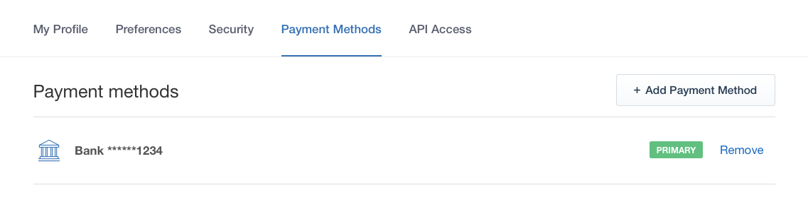
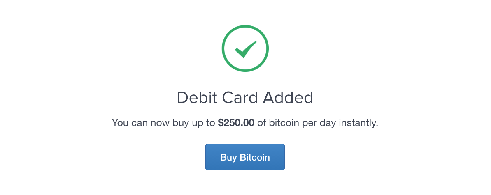
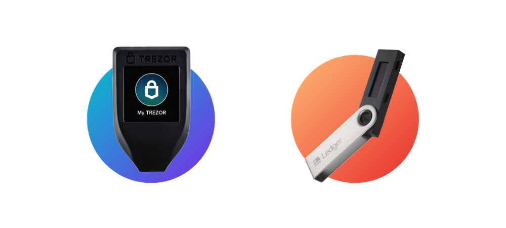

Как купить криптовалюту
ЧАСТЬ 1
Введение в покупку
Разберемся в чем дело:
Покупка биткойна (BTC) с помощью кредитной или дебетовой карты раньше была очень трудной задачей.
К счастью, такие компании, как Coinbase (США, Канада, Европа и Великобритания) и Coinmama (по всему миру), сделали этот процесс плавным и быстрым.
Ниже мы перечислили 5 проверенных бирж для покупки биткоинов с помощью вашей кредитной карты.
Вам понадобится биткойн-кошелек перед покупкой, так как некоторые биржи требуют его.
ЧАСТЬ 2
Обмен Биткоинов на кредитные/дебетовые карты
Coinbase
Coinbase - крупнейший в мире биткоин-брокер. Coinbase взимает фиксированную комиссию в размере 3,99% со всех покупок с помощью дебетовой карты, что является одним из самых низких показателей для европейских и американских клиентов.
Плюсы:
Высокая ликвидность и лимиты на покупку;
Простой способ для новичков получить биткоины;
Опция "мгновенная покупка" доступна с дебетовой картой.
Минусы:
Покупки, сделанные с помощью банковского перевода, могут занять до 5 дней;
Coinbase может отслеживать, как и где вы тратите свои биткоины.
Coinmama
Coinmama- это биткойн-брокер, который специализируется на том, чтобы позволить вам купить биткойн с помощью дебетовой или кредитной карты. С вас будет взиматься комиссия в размере 4,9% -5,9% из-за рисков и сборов за обработку платежей, связанных с платежами по кредитным картам.
Плюсы:
Работает практически во всех странах мира;
Самые высокие лимиты для покупки биткоинов с помощью кредитной карты;
Надежный и проверенный брокер.
Минусы:
Одни из самых высоких комиссий среди биткойн-брокеров кредитных/дебетовых карт.
CEX.io позволяет купить биткоин с помощью кредитной или дебетовой карты.
CEX.io является одной из старейших биткойн-бирж и работает в США, Европе и некоторых странах Южной Америки.
CEX.io процесс проверки является обширным и может занять до 30 минут.
Плюсы:
Поддержка для многих стран и регионов;
Низкая комиссия за торговлю 0,2%;
Налаженный и надежный обмен.
Минусы:
Процесс верификации является обширным, требующим большого количества личной информации (включая фотографию) и сопряженным с длительной задержкой;
Рынку GBP не хватает ликвидности.
Bitpanda
Bitpanda - это биткоин-брокер, расположенный в Австрии. Вы можете приобрести монеты с помощью кредитной / дебетовой карты за плату в размере 3-4%. Только жители Европы могут использовать Bitpanda.
Плюсы:
Одни из самых низких комиссий за покупку биткоинов с помощью кредитной/дебетовой карты;
Надежный и проверенный брокер.
Минусы:
Сборы не показываются открыто на сайте, а вместо этого включены в цену покупки.
ЧАСТЬ 3
Пошаговое руководство о том, как купить биткоины с помощью дебетовой карты на Coinbase
Coinbase позволяет вам мгновенно покупать биткоины с помощью кредитной или дебетовой карты. Вот пошаговые инструкции, которые помогут вам облегчить процесс покупки.
1. Создайте учетную запись на Coinbase
Сначала выберите пункт "Начать работу" в левом верхнем углу экрана.
Coinbase.com.
Затем заполните свою информацию в форме регистрации и выберите пункт "Создать учетную запись".
Как только вы создадите учетную запись, подтвердите свои личные данные и войдите в систему. Вас могут попросить загрузить скан удостоверения личности. После входа в систему перейдите к следующему шагу.
2. Перейдите к настройкам учетной записи
Перейдите в правый верхний угол и нажмите на свое имя. Там должно быть выпадающее меню, где вы можете нажать кнопку "Настройки". Затем нажмите кнопку "способы оплаты" в меню вверху, и вы должны увидеть что-то, что выглядит следующим образом:

Нажмите на кнопку "Добавить способ оплаты" в правом углу.
3. Нажмите Кнопку " Кредитная/Дебетовая Карта"
4. Введите информацию о Вашей кредитной/дебетовой карте
Обратите внимание, что в настоящее время Coinbase принимает только кредитные/дебетовые карты Visa и Mastercard.
5. Подтверждение
Вы должны увидеть подтверждение, подобное приведенному ниже. Если это так, то ваша кредитная/дебетовая карта была успешно добавлена!

6. Покупайте Биткоины!
Перейдите на страницу покупки и вы должны увидеть виджет, который выглядит как изображение ниже:
Введите сумму, которую вы хотите купить, и нажмите кнопку "купить биткоин мгновенно". Затем ваши монеты будут доставлены в ваш кошелек Coinbase!
Пошаговое руководство о том, как купить биткоины с помощью дебетовой карты на Coinmama
В этом разделе вы узнаете, как покупать с помощью CoinMama.
Откройте счет на CoinMama
После того как вы создадите свою учетную запись и подтвердите свой адрес электронной почты, вы можете начать выполнять следующие действия:
1. Войдите в свой аккаунт
2. Подтвердите свою личность
Введите все ваши личные данные в поля выше и сохраните их.
3. Загрузите и подтвердите свой идентификатор
4. Выберите способ оплаты
Вы можете использовать кредитную/дебетовую карту, SWIFT, SEPA (только в Европе) или более быстрые платежи (только в Великобритании).
5. Выберите количество биткоинов для покупки
Вы также можете купить другие монеты.
6. Введите адрес вашего биткоин кошелька
Биткоины будут отправлены сюда, как только ваш платеж будет завершен.
7. Введите информацию о карте
Введите данные своей кредитной или дебетовой карты.
Пошаговое руководство о том, как купить биткоины с помощью дебетовой карты на Bitpanda
Этот раздел покажет вам, как покупать с помощью BitPanda.
Откройте счет на BitPanda
После того как вы создадите свою учетную запись и подтвердите свой адрес электронной почты, вы можете начать выполнять следующие действия:
Войдите в свой аккаунт
Войдите в свой аккаунт и нажмите кнопку "купить" в верхней строке меню. Теперь вы увидите страницу, как показано ниже. Выберите "Visa / Mastercard", так как вы хотите купить с помощью своей кредитной или дебетовой карты. Кроме того, введите сумму евро, которую вы хотите потратить, или сумму BTC, которую вы хотите купить:
Теперь подтвердите, что вы хотите купить с помощью кредита/дебета. (Обратите внимание, что допускаются только карты 3d-Secure Mastercard и verified by Visa. Если у вас нет ни одного из них, попробуйте CoinMama или Coinbase).
Теперь вам нужно подтвердить, что сумма, которую вы ввели ранее, действительно является суммой, которую вы хотите купить. Кроме того, вы подтверждаете, что согласны с обменным курсом BitPanda. В поле "текущая цена" вы также можете увидеть обменный курс, который вы получаете. Скорее всего, он будет на 3-4% выше рыночного курса, так как комиссионные BitPanda включены в обменный курс.
Обратите внимание, что у вас есть только 60 секунд, чтобы зафиксировать свой обменный курс и подтвердить его!
Теперь вам придется подтвердить это с помощью SMS или телефонного звонка:
Введите PIN-код, полученный с помощью SMS или телефонного звонка:
Если вы успешно прошли проверку, теперь вы можете нажать кнопку "нажмите здесь, чтобы начать процесс оплаты". Убедитесь, что вы отметили 10-минутное время-у вас есть это количество времени, чтобы завершить свой заказ.
На этой странице вы вводите данные своей кредитной карты через mPAY24. Один раз, когда вы вводите информацию о своей карте, нажмите "Оплатить":
Вот и все! Теперь в вашем аккаунте BitPanda вы можете проверить вкладку "История", чтобы просмотреть детали торговли.
Теперь вы должны вывести купленные биткоины на свой кошелек.
Часть 4
Вопросы и ответы
Какие риски возникают при покупке биткоинов с помощью кредитной карты?
Прежде всего, убедитесь, что компания, для которой вы покупаете, имеет хорошую репутацию и регулируется. Вполне возможно, что отрывочные компании, продающие биткоины, могут собирать информацию о картах (мошенничество с кредитными картами) и, возможно, использовать вашу информацию для совершения мошеннических покупок с помощью вашей карты.
Некоторые пользователи сообщили о дополнительных сборах наличными, поэтому обязательно поймите, как ваша компания CC обрабатывает покупку биткоинов.
Каковы преимущества и преимущества?
Покупка с помощью дебетовой / кредитной карты - один из самых простых способов купить биткоины. Также один из самых быстрых! Поскольку большинство людей понимают, как делать покупки онлайн с помощью кредитных и дебетовых карт, менее техническим покупателям может быть проще использовать кредитные карты для покупки биткоинов.
Каковы же недостатки?
Трудно купить большое количество биткоинов с помощью CC или DC. Кроме того, сборы выше из-за риска мошенничества и мошенничества.
Могу ли я купить биткойн с помощью украденной кредитной карты?
Это невозможно, так как вы не пройдете проверку личности. Это также незаконно, поэтому вы не должны этого делать или пытаться.
Могу ли я купить биткоин с помощью кредитной карты анонимно?
Это незаконно, и вы не пройдете проверку личности.
Могу ли я купить биткоин с помощью предоплаченной дебетовой карты?
Большинство бирж не позволят вам использовать предоплаченную дебетовую карту. Чтобы купить биткоин с предоплаченной дебетовой картой, вам придется обменять его локально с помощью LocalBitcoins.
Если лимиты недостаточно высоки для меня, могу ли я купить биткоины на нескольких биржах?
Да, конечно.
Если, например, лимиты CoinMama слишком малы для вас, вы можете купить 150 долларов каждую неделю, а также открыть счет Coinbase и купить дополнительные 150 долларов.
Рискованно ли отдавать свое удостоверение личности, чтобы купить его?
Все зависит от того, насколько Вы доверяете биржам. Как и любая информация, которую вы предоставляете в интернете, всегда существует риск того, что она может быть взломана или украдена с веб-сайта, на который вы ее предоставляете.
Одна вещь, которую биткойн-биржи имеют для них, заключается в том, что, поскольку они постоянно подвергаются атакам, у них есть некоторые из лучших средств безопасности и защиты для защиты от взлома вашей личной информации.
Всегда существует риск, связанный с информацией в интернете. Даже Yahoo была взломана, и информация о 400 миллионах учетных записей была украдена.
Как мне определить лучший способ покупки?
Лучший способ-прочитать описание для каждого обмена. Убедитесь, что вы нашли тот, который поддерживает вашу страну и имеет сборы, которые вас устраивают. Вы также можете попробовать несколько обменов, чтобы увидеть, какой из них вам нравится использовать лучше всего.
Что случилось с VirWoX?
VirWoX больше не работает.
А пока, пожалуйста, попробуйте купить биткоин с помощью карты или воспользуйтесь нашим поисковиком обмена, чтобы найти нужный обме
Можете ли вы купить меньше одного биткоина?
Да, можно купить меньше одного биткоина.
Каждый биткоин делится до 8-го знака после запятой, что означает, что каждый биткоин может быть разделен на 100 000 000 штук. Каждая единица биткоина, или 0,00000001 биткоина, называется сатоши.
При покупке биткойна вам не нужно покупать полный биткойн, и вы можете легко купить меньше одного.
Большинство биткойн-бирж позволят вам указать сумму фиатной валюты, которую вы хотите потратить, и в обмен продать вам эквивалентную сумму биткойна. Например, если один биткойн стоит 250 долларов, и вы хотите купить биткойн на 125 долларов, вы получите 0,50 биткойна–при условии, что нет никаких сборов.
И наоборот, большинство Биткойн-брокеров также позволяют вам указать сумму биткойна, которую вы хотите, и взимают с вас эквивалент в фиате. Например, если вы хотите купить 0,25 биткоина, а 1 биткоин стоит 300 долларов, с вас возьмут 75 долларов.
Так что да, на 100% можно купить меньше одного биткоина. Такие компании, как Coinbase, позволят вам купить биткойн всего за 1 доллар.
Должен ли я оставить свои биткоины на бирже после покупки?
Мы действительно рекомендуем хранить любые биткоины, которые вы хотите сохранить в безопасности, в вашем собственном кошельке. Многие биткойн-биржи были взломаны и потеряли средства клиентов. Если вы не хотите стать жертвой этих взломов, то самый простой способ-хранить свои монеты в кошельке, который вы контролируете.

Вы можете продавать биткоины?
Из всех бирж, которые мы перечислили, CEX.io это единственный способ, который позволяет продавать биткоины на вашу кредитную карту.
Будут ли когда-нибудь снижаться сборы за покупку биткоинов с помощью дебетовой или кредитной карты?
Скорее всего, нет. Платежные системы, такие как Visa, Mastercard и American Express, взимают не менее 2,9% за транзакцию. Так что любая биржа, продающая биткоины для платежей CC, всегда будет передавать вам эту плату, плюс взимать немного больше, чтобы получить прибыль. Сборы могут стать ниже, если какая-то биржа заключит сделку с компанией по обработке кредитных карт, чтобы получить более низкие сборы.
Могу ли я купить другую криптовалюту, используя этот метод?
Все зависит от обмена. Coinbase, например, позволяет покупать litecoins и Ethereum с помощью кредитной карты. Coinmama, с другой стороны, поддерживает биткойн, лайткоин, эфир и Кардано.
Если вы хотите купить менее известные криптосистемы, вы всегда можете купить биткоины , используя описанные выше методы, и обменять их на альткоины на другой бирже, такой как Binance, Changelly, Kraken или Poloniex.
Почему я должен покупать биткоины с помощью кредитной карты, чтобы купить другие криптовалюты?
Это происходит потому, что большинство других криптовалют торгуются против биткоина. Ликвидность альткоинов по отношению к доллару США часто бывает очень низкой. Но, с другой стороны, ликвидность по отношению к BTC обычно очень хорошая. Таким образом, легко получить другие валюты, как только у вас есть биткоины, но не так просто получить другие валюты, не имея сначала BTC.
Запретили ли банки покупать криптовалюту с помощью кредитной карты?
В США некоторые банки блокируют пользователям покупку криптовалюты в кредит. Дебетовые карты, похоже, все еще работают. Европейские пользователи по-прежнему, похоже, могут покупать криптографию с помощью кредитной карты. Американские банки, по сути, чувствовали, что люди получают денежный аванс, поскольку криптография используется мгновенно и в основном похожа на наличные деньги.
11 июня 2018 года появились сообщения о том, что Wells Fargo заблокировала все кредитные карты своих клиентов от покупки BTC. В то время большинство кредитных карт уже были заблокированы Visa и Mastercard от покупки биткоинов. Wells Fargo, вероятно, сделал еще один шаг, хотя банк сказал, что они могут разрешить покупку криптовалюты снова в будущем.
Почему некоторые биржи отсутствуют в вашем списке?
Мы не хотим перегружать людей, поэтому мы вручную выбрали то, что считаем лучшими доступными биржами. Вы можете использовать инструмент домашней страницы, чтобы сузить круг обменов.
ЧАСТЬ 5
Сравнение бирж
Быстрое сравнение обменов кредитными/дебетовыми картами. Они охватывают почти все страны мира.
Покупайте биткоин с помощью кредитной/дебетовой карты на этих биржах
|
Обмен |
Сборы
|
Страны |
|
Coinbase |
2-4% |
США, Европа, Канада |
|
Coinmama |
4.9-5.9% |
Глобальный |
|
CEX.io |
7.5% |
Глобальный |
|
BitPanda |
5% |
Европа |
Обратите внимание, что сборы являются приблизительными и могут варьироваться в зависимости от вашей страны или размера покупки.
Воровство, мошенничество и хранение
СОВЕТ: Не храните свои биткоины на биржах!!!
Вот два примера, когда пользователи облажались, оставив биткоины на биржах:
Bitfinex hack, где пользователи потеряли $ 70 млн;
Mt Gox, где пользователи потеряли $ 450 млн или больше.
Убедитесь, что вы купили себе биткойн-кошелек, который будет надежно хранить ваши биткойны.
Помимо хранения данных, существует множество мошеннических бирж, которые крадут информацию о вашей кредитной карте и/или биткоины.
Следование этим двум основным принципам должно помочь вам избежать кражи, мошенничества и любой другой потери средств:
Сделайте исследование перед покупкой на любой бирже. Проверьте отзывы, рейтинги и информацию о регулировании.
Не храните монеты на бирже. Уже упоминалось выше, но стоит повторить.
Ledger Nano X Ledger Nano S TREZOR T TREZOR One
Покупка биткойна становится все проще. Если вы являетесь институциональным покупателем, CBOE и CME предлагают опционные договоренности о покупке биткойна. Кроме того, есть бесконечные точки продаж и даже банкоматы, где вы можете купить биткойн. С другой стороны, как индивидуальному покупателю, все, что вам нужно иметь, - это деньги и доступ к любой платформе, которая предлагает Биткойн для продажи, такой как криптобиржи, финансовые учреждения и т. д. Как только вы покупаете биткойн, вы используете BTC для следующих целей:
Биткойн продолжает оставаться окончательным инвестиционным выбором из-за огромной вероятности получения прибыли. Варианты покупки ведущей криптовалюты разнообразны:
Хотя большинство банков не разрешают использовать кредитные карты для покупки биткоинов, некоторые поставщики кредитных карт, единственным бизнесом которых является предоставление кредита, являются гибкими и предлагают эту услугу. Если вы планируете использовать свою кредитную карту для приобретения биткоинов, вы можете выполнить следующие действия:
Найдите лучший биткойн-рынок, такой как Coinbase, Coinmama, Bitpanda и т. д.
Регистрация учетной записи
Подключение к вашей кредитной карте
Торгуйте своей местной валютой на карте
Перевести биткоин в безопасный кошелек
Однако операции с кредитными картами привлекают комиссии, которые в среднем составляют 3,75%, что значительно дороже. Кроме того, кредитная покупка может рассматриваться как денежные авансы, которые могут привлечь более высокие комиссионные, что делает сделку дорогостоящей. Однако кредитная карта может увеличить кредитную линию, если обмен рассматривается как покупка, позволяющая вам тратить больше на обмен биткоинов.
Протокол операций с дебетовыми картами при покупке биткоинов почти аналогичен операциям с кредитными картами. Эти шаги те же самые, так как вы должны открыть счет в предпочитаемой вами бирже и следовать процессу, описанному в разделе Операции с кредитными картами. Единственная разница заключается в том, что вы должны выбрать вариант дебетовой карты, а не выбор кредитной карты.
В этой категории сборы обычно ниже, чем на кредитных картах. Единственное серьезное препятствие заключается в том, что ваш банк может не разрешать биткойн-транзакции из-за регулирующих или предупредительных мер, которые принимаются почти во всех странах мира.
Существует биткойн-банкомат, который предлагает универсальные решения для людей с наличными деньгами, которые хотят купить биткойн или другие криптовалюты. Машины-это места в бизнесе людей, торговых центрах или зонах с высоким трафиком, которые доступны для публики. Однако обязательным условием для покупки BTC является то, что у вас должен быть кошелек, с которого вы можете непосредственно внести BTC после покупки наличными. Машина удобна, проста в использовании и безопасна, так как риск быть обманутым практически равен нулю. Фактор безопасности подкрепляется тем фактом, что машины работают в соответствии с правилами KYC в соответствии с юрисдикцией эксплуатации.
Онлайн-деньги отличаются от цифровых наличных денег. Разница в том, что онлайн-деньги-это фиатные деньги, обозначаемые онлайн-кодами, такими как цифры и т. д. С другой стороны, цифровые наличные деньги представляют собой токены, такие как Биткоин, Эфириум и т. д. они генерируются с помощью майнинга, а также децентрализованы и поддерживают частные транзакции. В связи с этим вариант онлайн-перевода денег в биткоин возможен через различные платформы.
Платформа PayPal позволяет вам покупать биткоины в рамках Биткойн-обменных платформ, таких как eToro, Cryptex24 Exchange, Xcoins P2P Bitcoin Lending и многих других платформ крипторынка. Чтобы завершить транзакцию, вам нужно будет иметь счет Second Life Linden Dollars (SLL)-валюта для виртуального мира.
Платформа PayPal недавно подала заявку на получение патентного права на ускоренную систему транзакций виртуальной валюты (EVCTS). Это означает, что BTC можно купить в виртуальном мире в основном в спекулятивных целях. Кроме того, EVCTS позволяет мгновенные временные рамки транзакций, поскольку платформа PayPal поддерживает создание “мини-кошельков”, которые будут действовать как блоки для авторизации транзакций, поддерживающих Обмен BTC.
Другими подобными платформами являются:
Google Кошелек
Skrill
Intuit
Биткойн — это крупная инвестиция, как актив, так и криптовалюта. Имея такой потенциал, стоит рассмотреть такие аспекты биткойна, как его история, способы оплаты, крупнейшие мошенники в истории и кошелек.